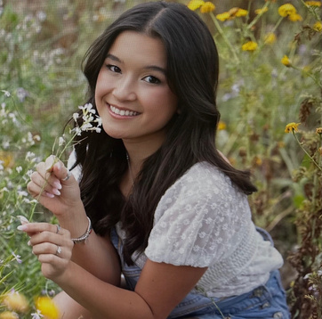

Student Reflections


What They Discovered
After the visit, each student reflected on their key takeaways from their time with you at Lumen Field.
Paige Olson
"Hearing how Lisa and Michael built their careers pushed me to think more intentionally about how I can take ownership of my own development. One of my biggest takeaways was how important relationships are — Lisa's experience of building a lasting mentorship was especially impactful. It made me reflect on how I can be more intentional in building relationships and actively supporting others in their growth."
Owen Hyatt
"My biggest takeaway was understanding what stage of life you are in. When you're younger, there is time to put your head down and grind. But transitioning into a position where work-life balance is more accepted is also a decision that can be made intentionally. That framing gave me a completely different way to think about building a career."
Charles Herman
"It was clear in the stories of both Michael and Lisa that individual drive is key — but ineffective if not paired with strong teamwork. Their hard work and team-first mentality allowed them to stand out, and empowered them to advocate for the positions that fit them best. That combination is something I want to carry into my own career."
Samantha Smith
"Lisa shared that a coworker who started as an intern helped her learn Tableau, and they still meet every other week. Michael spent free time learning Excel and AI on his own. And Lisa's answer to how she continues to grow — 'I choose my job based on where I am in life, and right now I'm enjoying the comfort' — was exactly what I needed to hear. That is a skill in itself."
Eamon Mohrbacher
"My two big takeaways were finding a balance between what you are doing professionally and what stage in life you are in, and building relationships and friendships that make your job easier and worthwhile. Both of those came through clearly in how you talked about your own careers."
Marcus Heppner
"This visit reminded me how important it is to try new things early on and challenge yourself through unique opportunities. Even work put in behind the scenes can be crucial in nurturing your skillset and adding value to an organization. Seeing that in both of your career stories opened my eyes to what can be built through dedicated effort."

Allison Kann
"When Lisa talked about choosing the best job based on the season of life you are in, that really stuck with me. And hearing that there are a million ways to get where you want to be, and that the path is not linear — that was the reminder I needed. Failure and rejection is just redirection. I left that conversation genuinely more confident."